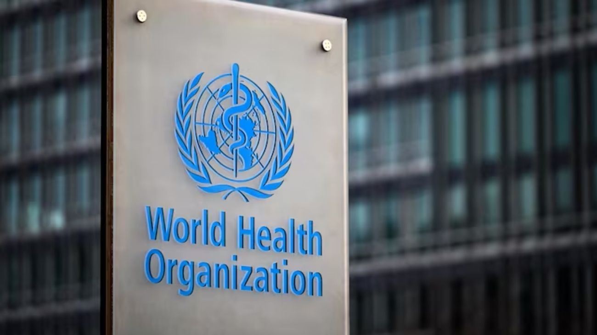

Es oficial: Argentina ya no es parte de la OMS y se alinea con la postura de Estados Unidos
El canciller Pablo Quirno confirmó la salida, que convierte a Argentina en uno de los pocos países del mundo fuera del principal organismo sanitario internacional, siguiendo los pasos de Estados Unidos.

Argentina escribió hoy una página inédita en su historia sanitaria. El gobierno del presidente Javier Milei hizo efectivo este martes el retiro del país de la Organización Mundial de la Salud, al cumplirse un año de la notificación formal realizada ante la Organización de las Naciones Unidas. El canciller Pablo Quirno fue el encargado de anunciar la novedad a través de sus redes sociales, confirmando que el proceso se completó en tiempo y forma según los mecanismos internacionales vigentes. Argentina se había adherido a la constitución de la OMS en 1948, lo que significa que el país perteneció al organismo durante casi ocho décadas antes de dar este paso.
Para entender cómo funciona el proceso de salida, hay que saber que los tratados internacionales no se abandonan de un día para el otro. Argentina comunicó esta decisión mediante una nota dirigida al Secretario General de la ONU, en su carácter de depositario de la Constitución de la OMS, el 17 de marzo de 2025. De conformidad con lo establecido en la Convención de Viena sobre el Derecho de los Tratados, el retiro se produce un año después de realizada esa notificación. En otras palabras, el Gobierno avisó hace exactamente un año, esperó el plazo legal requerido, y hoy la salida se convirtió en un hecho consumado. Las razones esgrimidas apuntan principalmente a la gestión de la pandemia de COVID-19: la gestión libertaria criticó que "las cuarentenas provocaron una de las mayores catástrofes económicas de la historia mundial" y sostuvo que las recomendaciones del organismo respondieron a intereses políticos antes que científicos.
La salida de la OMS tiene consecuencias concretas para el sistema de salud argentino. Argentina dejará de recibir asistencia técnica, fondos y participación en redes de información epidemiológica de la OMS. Esto incluye el acceso a alertas tempranas ante brotes de enfermedades, protocolos de respuesta ante emergencias sanitarias, y financiamiento para programas de vacunación y control de enfermedades transmisibles. Sin embargo, pese a este retiro, Argentina continúa siendo parte de la Organización Panamericana de la Salud (OPS), el organismo regional que agrupa a los países de América y que, en la práctica, tiene una presencia más directa en las políticas sanitarias de la región. El Gobierno sostuvo que buscará reemplazar los vínculos perdidos con la OMS a través de acuerdos bilaterales con otros países.
La decisión no puede leerse sin su contexto geopolítico. La salida de Argentina responde a la sintonía ideológica y el respaldo simbólico que busca tener el gobierno de Milei con su contraparte en la Casa Blanca. La decisión se produce en el marco del estrecho alineamiento con Estados Unidos, país que concretó su salida de la organización el pasado 22 de enero. Argentina y Estados Unidos son hoy los dos países más grandes del mundo fuera de la OMS, una coincidencia que no es casual sino parte de una estrategia de política exterior compartida entre Milei y Trump. Para los defensores de la medida, es un ejercicio de soberanía sanitaria; para sus críticos, es un debilitamiento de la capacidad del país para responder a futuras emergencias de salud pública. Lo que es innegable es que, a partir de hoy, Argentina juega con reglas propias en el tablero sanitario internacional.